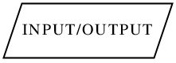
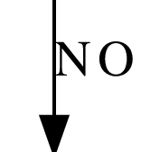
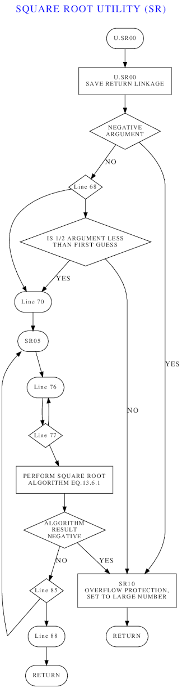
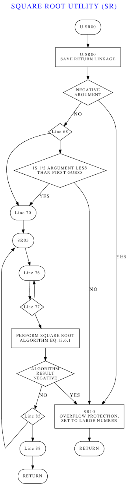
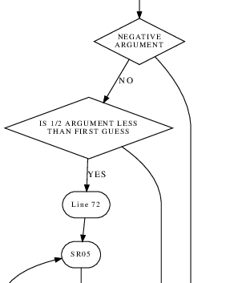
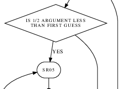
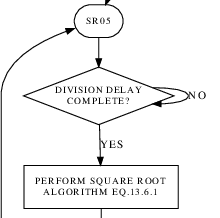

If you're reading this, I assume you know what the LVDC was, know what
the flight software for it is, and that you have access to the
available LVDC flight-program source code in compliance with
whatever ITAR restrictions on export of that software from the
U.S. may or may not be, so I won't rehash that territory here.
Rather, this page is solely about the creation and maintenance of
software flowcharts based LVDC flight-program software. By
that, I do not mean creation of flowcharts that allow
complete and accurate recreation of the flight-program
software. Instead, I refer to a set of undocumented
annotations that appear in AS-512 and AS-513 flight-program
software (and presumably other versions of the flight software not
available to us) that I theorize may have been hints for
draftsmen creating mid-level flowcharts that could provide
convenient guidance to someone trying to understand the general
flow of the software.
In fact, this is entirely my own idea: There is no
available evidence at all about who created the annotations I
refer to, when they were created, why they were created, whether
they actually relate to flowcharting, how to interpret the
annotations, nor whether flowcharts created from them provide a
reasonably-accurate view of the software flow that could be useful
to someone or not. I merely observe that flowcharts can
be created based on these annotations, that those flowcharts are
pleasing to me, and that perhaps that they are not
entirely without merit more generally.
But they are not perfect. The two main problems about the
flowcharts that bother me are:
Potentially, the latter of these problems may ultimately require
updates to the flowchart-generation software (more about that in a
moment) But regardless, the first step for either of the
problems is human inspection of the flowcharts and of their
relationship to the LVDC source code, along with manual editing of
the flowcharting annotations as necessary. Both are
difficult tasks, but are the kinds of tasks that can be rewarding
in terms of the understanding gained of the LVDC software in the
process. This tutorial is addressed to someone who would
want to involve themself in process of checking and improving the
LVDC flowcharts.
As far as the flowcharts themselves are concerned, you don't
actually need copies of them since you'll have the capability of
building them yourself. With that said .... Unlike the
LVDC source code, I do not believe that the flowcharts are
restricted by ITAR, and so it's possible you may find them on the
LVDC web page. However, at least at first, I am continuing
to treat them as ITAR-restricted, so it may be that the only place
you'll find them is the same place you got the LVDC source code.
Having downloaded the LVDC source code and (optionally) the
flowcharts onto your computer, you'll have encrypted archives in
the 7z format, respectively LVDC-software.git.7z and (optionally)
dots.7z. You'll need 7z-enabled archiving software to unpack
these archives. Google it to find out what the right
archiving software is for you platform.
The unpacked LVDC software is in the form of a git repository, so
to access it you'll need to have git installed on your
computer. The unpacked git repository will be called
LVDC-software.git, and won't appear to have any usable files in
it. You'll need to run the command
git clone LVDC-software.git
thus creating a new folder (called just LVDC-software) in which
you'll be able to find all of the LVDC source-code files.
You will need to have Python 3 installed on your computer in
order to run the flowchart-generation software. I don't
believe that any nonstandard Python modules need to be separately
installed. Python 2 will not suffice.
My
flowchart-generation software needs to be downloaded.
The only files actually needed are yaASMflowchart2.py and
sdl.ps. No installation is needed, though you may find it
helpful to give yaASMflowchart2.py "executable" permissions (if
that's something that exists in your operating system) and to put
it in your PATH. The easiest thing to do with sdl.ps is to
put it directly in whatever folders hold LVDC source-code files
(*.lvdc).
The graph-visualization software graphviz is
needed. This is a free download (Linux/Windows/Mac).
(Optional.) In viewing or editing LVDC source code, it is
helpful though not required for the viewing/editing software to be
able to provide syntax highlighting for LVDC assembly
language. You'll see examples of that below. The only
editor presently having LVDC syntax-highlighting capability is vim,
which is admittedly not to everyone's taste.
| Aside: If you do choose to install vim, LVDC syntax highlighting is not a standard feature and must be installed separately as a one-time setup. To do so, download this zipfile and uncompress it. In the uncompressed folder you'll find two other folders, named "ftdetect" and "syntax". There's some folder on your system that holds vim syntax-highlighting options, though unfortunately I don't know what it is and you'll have to google it to find out. On my own Linux system, that folder happens to be ~/.vim/, though it didn't exist at first and I had to create it myself. At any rate, once you figure out the folder you're supposed to use, and/or you create it, then you should copy ftdetect and syntax into it. From now on, whenever you open an LVDC source-code file with vim, it will be syntax-highlighted. |
(Optional.) The flowcharts are produced in PostScript
format. To view them, you either need document-viewer
software that supports PostScript, or else graphics software that
can conveniently convert PostScript to some other image format,
preferably PNG. There are so many possibilities on so many
different platforms (Linux vs Windows vs Mac) that it is hard to
make solid recommendations. With that said, I most-often use
ImageMagick
graphics software when converting to PNG, and instructions I
give will be geared towards it. Personally, I seldom have
reason to perform such conversions.
| Aside: At this
writing, ImageMagick 6 and ImageMagick 7 are both
generally available, with ImageMagick 6 being the
most-readily available on my computer system. At
least on my computer (Linux Mint 21), ImageMagick 6 is
constrained by various "policy" settings, and (for me) the
default policy settings were heavily weighted against my
being able to actually perform flowchart
conversions. So before doing anything at all, I
needed to change the policy settings. I don't know
if ImageMagick 7 has equivalent policy problems. Perhaps
not. I didn't need to change any myself. ImageMagick 6 policy settings are found in a file called policy.xml stored somewhere on your computer. (On my system, they're at /etc/ImageMagick-6/policy.xml.) The file may require administrative rights to edit. Fortunately, these policy changes are a one-time-only thing, and once set they can be forgotten. On my system, the default policy settings disallowed all operations using ghostscript, thus disallowing operations on PostScript files, so I had to comment out the policy reading <policy domain="coder" rights="none" pattern="PS" />Then too, there are various policies representing limits on the amount of computer resources ImageMagick is allowed to use. Any operation that exceeds those limits will fail, probably with unhelpful messages that do not allow you to isolate the problem. Unfortunately, on my own system, I've had to pep up these limits quite a lot, long ago, for applications unrelated to flowcharting, so I have little idea how much you'll have to change the limits; probably less drastically than me. The resource-related policies that may require pepping up on your system currently read as follows on my system: <policy domain="resource" name="memory" value="24GiB"/>But the only resource policies I've set specifically for flowchart-conversion reasons are the "width" and "height" settings. |
Creation of software flowcharts from LVDC source-code files is a
multistep process, which in general looks like this:
Let's consider these steps in order.
Creation of DOT files from LVDC files. Recall that
any given LVDC flight program consists of a set of dozens of LVDC
source-code files. We don't create a single, immense
flowchart for an LVDC flight program as a whole. Rather, the
flowcharting annotations in the LVDC software define many, many
smaller flowcharts. Usually there's a single flowchart in an
individual LVDC source file. But sometimes there are
multiple flowcharts in a single source file, and sometimes (though
rarely) there are none at all. The naming of the flowchart
files is provided by the flowcharting annotations and not
by the filenames of the source-code files. You can either
process each source-code file individually, or else you can
concatenate some or all of them and process them all at
once. If yaASMflowchart2.py is in your PATH, from a command
line you could process a single LVDC source-code file (say,
SQUARE_ROOT_UTILITY.lvdc) like so:
yaASMflowchart2.py <SQUARE_ROOT_UTILITY.lvdc
Or in Linux, you could process all of the LVDC files in the
current folder at once like this:
cat *.lvdc | yaASMflowchart2.py
In Windows, the corresponding command would be:
type *.lvdc | yaASMflowchart2.pyThe result of this operation is a bunch of DOT files, 93 in all if you're working with the entire set of AS-512 source-code files:
ABSOLUTE-COMMAND_FREEZE_UTILITY_(FR).dotBy the way, these DOT files can themselves be manually edited to change the appearance of the flowcharts, if you're expert enough in graphviz and the DOT language to do so. I wouldn't recommend doing that in general, since any changes you make to the DOT files directly are so easily overwritten later by yaASMflowchart2.py and thus lost. But the potential does exist.
ACCELEROMETER_PROCESSING_(AP).dot
ACCELEROMETER_READ_(AR).dot
ACQUISITION_GAIN-LOSS_(GL).dot
APS_ATTITUDE_CONTROL_TEST_(AC).dot
ARCTANGENT_UTILITY_(AT).dot
BOOST_NAVIGATION_(NE).dot
CHI_COMPUTATIONS_(CC).dot
CMC_CUTOFF_(CI).dot
COMPRESSED_DATA_TELEMETRY_(CT).dot
...
dot -l sdl.ps "SQUARE_ROOT_UTILITY_(SR).dot" >"SQUARE_ROOT_UTILITY_(SR).ps"On some platforms, the surrounding quotes (single-quotes could be used instead) aren't needed, but on others the parentheses in the filename causes problems without the quotes, so you may as well just always include them.
convert -density 96 "SQUARE_ROOT_UTILITY_(SR).ps" -background white -flatten "SQUARE_ROOT_UTILITY_(SR).png"For ImageMagick 7, the "convert" command absurdly turns instead into the "magick" command but is otherwise the same:
magick -density 96 "SQUARE_ROOT_UTILITY_(SR).ps" -background white -flatten "SQUARE_ROOT_UTILITY_(SR).png"
As I've mentioned, AS-512 and AS-513 flight-program source code
contains various unexplained annotations among the program
comments that usually have no immediately-obvious interpretation
in terms of describing what the source code is doing. After
contemplating the meaning of these for a couple of months, I
formed an impression that these annotations may have something to
do with flowcharts, and specifically may be hints for creating a
flowchart of the associated code. Or possibly at one time
had even been exact instructions for automating generation of
flowcharts, but had deteriorated over time due to neglect and lack
of programmer training. Whatever the explanation, in AS-512
and AS-513, by my reckoning, the annotations can no longer be
interpreted with 100% reliability. Thus the explanations I'm
going to give you of these annotations and how to interpret (or
edit) them are based on my own inferences, and have lots of
exceptions where they don't agree with my explanations.
Throughout this section, I'll illustrate my explanations using
AS-512's MATRIX MULTIPLY UTILITY module. Here's the entire
original source code for that module, sans and modern comments we
added when transcribing it. Everything that I think is part
of a flowcharting annotation in one way or another has been
highlighted either in red, green, or blue:
$SEGMENT MM REF MATRIX MULTIPLY UTILITY (MM)The red annotations are clearly the most mysterious as they seem to have no purpose whatever in explicating the code. If present, they are invariably in column 71. (Recall that LVDC source-code was originally on 80-column punch-cards and has a specific columnar alignment.) Some of these red markings, in my view, give you high-level information about a flowchart:
TITLE 'MATRIX MULTIPLY UTILITY (MM) A0840'
**********************************************************************
* *
* *
* MATRIX MULTIPLY UTILITY (MM) *J
* *
* *
**********************************************************************
* DATE 5 - 18 - 68
* REVISIONS NONE
* FUNCTION THE FUNCTION OF THE MATRIX MULTIPLY UTILITY MODULE
* IS TO PERFORM A MATRIX MULTIPLICATION ON THE TWO
* SPECIFIED MATRICES
* ENTRIES U.MM00 - TWO ARGUMENTS SUPPLIED UPON ENTRY. IN AC,
* A DFW ON THE FORM CLA,A,MPY,B WHERE A AND
* B ARE THE INITIAL LOCATIONS OF THE
* MATRICES TO BE MULTIPLIED. IN PQ, A WORD
* CONTAINING A DFW OF THE FORM STO,C IN
* SYLLABLE 1 AND A COUNTER (SCALED B25) IN
* SYLLABLE 0. C IS THE INITIAL LOCATION OF
* THE PRODUCT MATRIX.
* LIST $
* ARROWLEFT DRAW < $
* ARROWRIGHTDRAW > $
* ARROWDOWN DRAW V $
* SYMBOL DRAW . $
ORG P.MOD,C.UT
*Q *
* U.MM00 S
U.MM00 STO 777 SAVE RETURN LINKAGES AND INPUT ARGUMENTS B
SUB =O01 AKJUST DFW FOR USE
STO D.VUTB+4
CLA 775
STO D.VUTB
AND =3
STO D.VUTB+5 SAVE COUNTER
CLA 777
STO D.VUTB+6
MM100 HOP MM500 (U.VD01)FORM VECTOR DOT P
EXM 0,1,0 STORE 1ST ELEMENT B
HOP MM500 (U.VD01)FORM VECTOR DOT P
EXM 0,1,1 STORE 2ND ELEMENT B
HOP MM500 (U.VD01)FORM VECTOR DOT P
EXM 0,1,2 STORE 3RD ELEMENT B
CLA D.VUTB+5
SUB =1
TNZ MM200 MATRIX MULTIPLICAT- ION COMPLETE N
HOP D.VUTB+6 RETURN X
* NONE 8 $
MM200 STO D.VUTB+5 SET TO FORM ELEMENTS FOR NEXT ROW B
CLA D.VUTB+4 *
ADD =O7500004 * RESET A ADDRESS, INCREMENT B ADDRESS
STO D.VUTB+4 *
CLA D.VUTB
ADD =O01 * INCREMENT C ADDRESS
STO D.VUTB
TRA MM100 G
MM500 STO 777 SET TO PEFORM VECTOR DOT
CLA D.VUTB+4
ADD =O01
STO D.VUTB+4
TRA U.VD01
* E
* H
Aside: Other than J and H lines, I currently just ignore all full-line comments, because I haven't figured out any reliable interpretation for them. It's possible they may be best interpreted as captions for blocks of flowchart elements, and that they should be printed on the flowchart separately from any individual boxes or arrows. I just don't know. However, omitting them doesn't seem to do much harm.More often, red annotations indicate that there's a flowchart box associated with the vicinity of that line of code, and tells you the shape of the box. Only a few of the many relatively-standardized flowchart shapes are used. How the captions of the boxes should be derived isn't entirely clear, and the flowchart-generator program tends to use a prioritized heuristic approach to figuring it out, as described in the following table.
| Red
Annotation |
Interpretation |
Flowchart Shape |
|---|---|---|
| S,
X, G |
Entry or exit point. Or
more specifically:
|
|
| P |
Call to a subroutine or expansion of a
macro; i.e., a named sequence of instructions.
Caption: The program comment is generally of the
form "(label)remainder of comment", and is
used (word-wrapped) as the caption. If "(label)" is present, a
linefeed is also inserted following it.
|
|
| M,
L, B, D |
Unnamed sequence of
instructions. The caption is generated the same way as
for P (see above). The
distinction between M, L, B, and D isn't clear.
Perhaps the following interpretations, in order of
increasing uncertainty, are meaningful. Perhaps not:
Perhaps the real truth here is that there's no consistent
way for us to distinguish these annotations from each
other. The flowchart-generator software doesn't even
try, and treats them as interchangeable. |
|
| Q |
Decision. The caption is generated the same way as for P (see above). | |
| I |
Input or output, generally via PIO instructions. The caption is generated the same way as for P (see above). |  |
| Red
Annotation |
Interpretation |
Flowchart Shape |
|---|---|---|
| Y |
Yes |
|
| N |
No |
 |
In most cases, the flowchart depicts control flow by following
the simple rule that each flowchart box has an arrow to the next
box, in the order that the annotations associated with the boxes
are encountered in the source code. But there are exceptions
that interrupt this simple default ordering:
Decision boxes are the trickiest aspect of program flow in the
flowcharts. The stereotypical case is a two-way decision, in
which the pattern of LVDC instructions and flowchart annotations
looks like this:
... instructions to set up a test ...
final instruction of the setup Q
TMI|TNZ label1 Y or N
next instruction
... additional instructions ...
The flowchart associated with this has a decision box (labeled
with the comment for the "final instruction of the setup"), an
arrow captioned YES or NO to label1, and an arrow
captioned NO or YES to the next box following the decision
box. The complexity comes in because there are many ways to
do this differently or even wrong, and the flowchart generator
tries to handle as many of those exceptions as it can.
For one thing, suppose we instead had this:
... instructions to set up a test ...
final instruction of the setup Q
TMI|TNZ label1 Y or N
TMI|TNZ label2 N or Y
next instruction
... additional instructions ...
This is treated as a 3-way decision instead of a 2-way decision,
so that we have an arrow captioned YES or NO to label1,
and an arrow captioned NO or YES to label2, and an
uncaptioned arrow to the next box following the decision
box. Perhaps a bit misleading, but inescapable given that Y and N are
the only red annotations available
for the arrow captioning. (Fortunately, there seem to be no
4-way or higher decisions in LVDC code.)
A common situation, which may or may not be an error on the part
of the original programmer, is when the Q
annotation is missing:
... instructions to set up a test ...
final instruction of the setup
TMI|TNZ label1 Y or N
next instruction
... additional instructions ...
In this case, the flowchart generator compensates by inserting a
decision box captioned by the comment associated with the TMI|TNZ
(not from the "final instruction of the setup"), but
otherwise proceeds as if the decision box had been present all
along; i.e., there is still an arrow from the decision box to label1,
and so on.
I probably haven't captured all of the possible aberrations
associated with decision-box annotations here, but the lesson is
clear: poorly-annotated decision-boxes are fairly common.
The FLOW directive is the mechanism provided to
compensate for poor flowchart annotations in the original source
code. A detailed worked-out example appears in the following
section.
When you want to correct poor flowchart annotations, the first
step is to determine what the correct annotations should
have been. However, having determined the correct
annotations, you can't simply modify the LVDC source code's
annotations, because our unalterable rule is that the LVDC source
code must match the original program listing exactly, even
if the original code was in error. Because otherwise, we
have no means of verifying that the transcription process was
correct. But we do allow additions to the source code of
directives defined only by the modern LVDC assembler and not
accepted by the original LVDC assembler, because there's no way of
confusing such a directive with incorrectly-transcribed source
code.
The FLOW directive is one such modern-only addition to
LVDC assembly language. The FLOW directive is
placed on the line immediately preceding a line with poor
flowchart annotations, and provides corrections to those
annotations. However, the FLOW directive is used
only by the flowchart generator program, and is entirely discarded
by the modern LVDC assembler, so that the presence of FLOW
directives does not in any way alter assembled LVDC code.
From the description in the preceding section, you'll have noted
that the following characteristics of a line of LVDC code
sometimes affect flowchart generation:
The FLOW directive has 7 fields corresponding to these
parameters (including the always-blank #5), and allows you to
correct any or all of them for any given line of LVDC code.
The format of a FLOW-directive line is:
FLOW F1,F2,F3,F4,F5,F6,F7
where the fields F1 and so on correspond to the 7 characteristics
mentioned above. Note that there are no spaces shown.
In fact, no spaces are allowed until F7 is reached, since F7 is
the only one of the seven fields that can actually contain any
spaces. Any field you don't want to provide a
correction for is left empty. For example, the directive
FLOW ,,,,,,
would correct nothing at all. If the correction you want to
apply is to blank out something that isn't empty already, you can
use the field ""; i.e., two double-quotes side-by-side. Thus
the following command would blank out all seven flowchart
characteristics:
FLOW "","","","","","",""The most-common use of FLOW is probably to change the red annotation. For example, here is a directive to turn a line into a decision box and provide a caption for it that differs from what's on the source-code line:
FLOW Q,,,,,,MY DECISION?There are also a couple of new red annotations you can use, invented solely for the modern assembler and not present in original LVDC code. They're intended mostly for internal use by the flowchart generator, but can sometimes be used to good effect in FLOW directives:
For example, suppose you had code like so,
TMI *+1
TRA label
... some instruction ...
The TMI instruction will turn into a decision box and will want
to have an arrow to "some instruction", but "some instruction" has
no symbolic label, and thus the flowchart generator will want to
insert a terminal box with a caption like "Line N".
But if you instead inserted a FLOW directive,
TMI *+1it would instead insert a terminal box captioned "MYLABL" ... which may or may not be more meaningful than "Line N". (It's just an example!)
TRA label
FLOW -,MYLABL,,,,,
... some instruction ...
 What I'd like to
do in this section is work through a real-life example, namely
that of the SQUARE ROOT UTILITY module from the AS-512 flight
program that has already been used several times above as an
example. It's a very short file that has a relatively-large
number of potential improvements. Fixing it up the flowchart
will thus be a lot of work, but at the same time we'll gain a lot
of understanding about the code along the way.
What I'd like to
do in this section is work through a real-life example, namely
that of the SQUARE ROOT UTILITY module from the AS-512 flight
program that has already been used several times above as an
example. It's a very short file that has a relatively-large
number of potential improvements. Fixing it up the flowchart
will thus be a lot of work, but at the same time we'll gain a lot
of understanding about the code along the way.
To the left is the relevant portion of the source-code file,
which I've chosen to look at using the vim editor, because LVDC
syntax-highlighting is available in vim. Whereas to the
right we see the flowchart generated from that source code as-is.
As mentioned earlier, one issue with the flowchart is that we may
have succeeded in accurately reproducing the program flow — that
remains to be seen! — but inadequate flowcharting annotations in
the original source code may not have allowed decent labeling of
some of the boxes or arrows in the flowchart. You can see
this particularly in the decision boxes labeled "Line 68", "Line
77", and "Line 85", and in the associated entry points labeled
"Line 70", "Line 76", and "Line 88". Why these goofy
labels? It's because there's nothing in the source code that
tells the flowchart-generator software anything meaningful about
the test being performed or the significance of the test
results.
So if we want to fix up the flowchart at those points with meaningful
captions, we have to use our soft human brains to figure out the intent
of the original source code. This will require actual
thinking and rummaging around in the LVDC source code, and cannot
be done in some formulaic rote fashion.
Let's first see if we can figure out what's happening at line 68
of the source code and its environs. According to the
comments at the top of the source code, subroutine U.SR00
accepts a number (let's call it x) in the accumulator
register and is supposed to compute its square root. D.VUTB
(a variable), it tells us, contains the "previous square root of
argument". So presumably one would load an initial guess for
the square root (perhaps x/2) into D.VUTB before
calling U.SR00 the first time, and could then keep
calling U.SR00 iteratively in order to keep refining the
square-root value.
It's too bad that the comments in the source code don't actually
say that, and instead force us to presume it.
As it happens, there is external documentation that can help us
out somewhat, sometimes, in figuring out stuff like this.
The external documentation I speak of is something called the
Equation Defining Document (EDD). Unfortunately, there are
several separate EDDs, and we only have the one called "LVDC
Equation Defining Document (EDD) for the Saturn IB Flight
Program". Which is not what the AS-512 flight
program is, given that AS-512 used a Saturn V launch
vehicle. But still, it's close enough in some ways to be
helpful. Rather than making you look in the document library
for the document, here are direct links to the various parts of
that EDD:
Now, if you look at line 79 in the source code, you'll notice a
reference to EQ. 13.6.1. That's an equation in the EDD,
though since we have a different version of the EDD, it's not
necessarily the same equation number. As it happens, in the
Saturn IB EDD it's section 13.5 (rather than 13.6) that describes
SQUARE ROOT ALGORITHM, so the relevant equation is 13.5.1.
Let me quote the EDD in full:
SUB D.VUTB IS 1/2 ARGUMENT LESS THAN FIRST GUESS Q
TMI *+2 Y
TRA SR10 N
But what are we going to do about
it? Our own rules for transcribing the LVDC source code are to
do so as-is, including all errors, so we can't just go in
and "fix" the program comments according to how we imagine they
should have been done way back when. What we do instead is to
add FLOW directives, which don't exist in the original
LVDC assembly language, and thus are unambiguously "modern", without
changing any of the original lines. Here's what that looks
like:FLOW Q,,,,,,IS 1/2 ARGUMENT LESS THAN FIRST GUESSI could have added a FLOW directive here to remove the comment from line 69, but there's no need to do so, since that comment never shows up the flowchart. But regardless, the section of the flowchart related to Line 68 and its environs has now changed to the more-pleasant form seen at left.
SUB D.VUTB
FLOW Y,,,,,,
TMI *+2
TRA SR10 IS 1/2 ARGUMENT LESS THAN FIRST GUESS N
FLOW Y,,,SR05,,,Remember, FLOW directives do not affect the assembly of the source code in any way, so TMI *+2 still assembles as TMI *+2 regardless of any FLOW directives we may choose to stick in front. The result of this change, seen to the right, is exactly what we desired.
TMI *+2
Aside: Here's a pro tip for you. Fix the flowcharting problems from the bottom of the source-code file upward. That way, addition of FLOW directives doesn't keep messing up the line numbers!Original lines 76 and 77 apparently constitute some kind of delay loop, starting with a count of D.KB24, and then decrementing that count by D.KB25 until it becomes negative. Not that it really matters what the specific values of D.KB24 and D.KB25 are, but looking at where they're allocated in the GFP DATA PACK module, we find that they're 4 and 2, respectively ... so it's actually a very short delay indeed. At any rate, the code originally looks like this,
SUB D.KB25
TNZ *-1
CLA D.VUTB
but it seems as though we should update it to:
FLOW Q,,,,,,DIVISION DELAY COMPLETE?which indeed repairs it as shown to the left.
SUB D.KB25
FLOW N,,,,,,
TNZ *-1
CLA D.VUTB
FLOW Q,,,,,,3 ITERATIONS COMPLETED?The mysterious "FLOW -,DONE,,,,," near the bottom is there to provide a label ("DONE") to which the decision box can exit, since otherwise it would exit to the (unlabeled) "Line something".
SUB =1
FLOW Y,,,,,,
TMI *+3
STO D.VUTB+2
TRA SR05
FLOW -,DONE,,,,,
CLA D.VUTB
FLOW B,,,,,,DIVIDE BY CURRENT ESTIMATEat (current) line 75 so that the DIV operation shows up in the flowchart. The final, final version of the flowchart, unless I or somebody else keeps thinking about it, thus becomes: